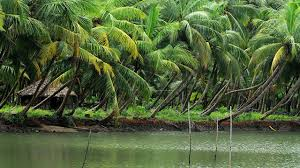

KASARAGOD
Kasaragod or Kasargod is one of the 14 districts in the southern Indian state of Kerala. It is the northernmost district of Kerala and is included in the North Malabar region. It is also known as Saptha Bhasha Sangama Bhoomi (The land of seven languages), as seven languages namely Malayalam, Tulu, Kannada, Marathi, Konkani, Beary, and Urdu are spoken, unlike the other districts of Kerala.[1] It was a part of the Kannur district of Kerala until 24 May 1984. The district is bounded by Dakshina Kannada district to the north, Western Ghats to the northeast, Kodagu district to the southeast, Kannur district to the south, and Arabian Sea to the west. Kasargod district has the maximum number of rivers in Kerala